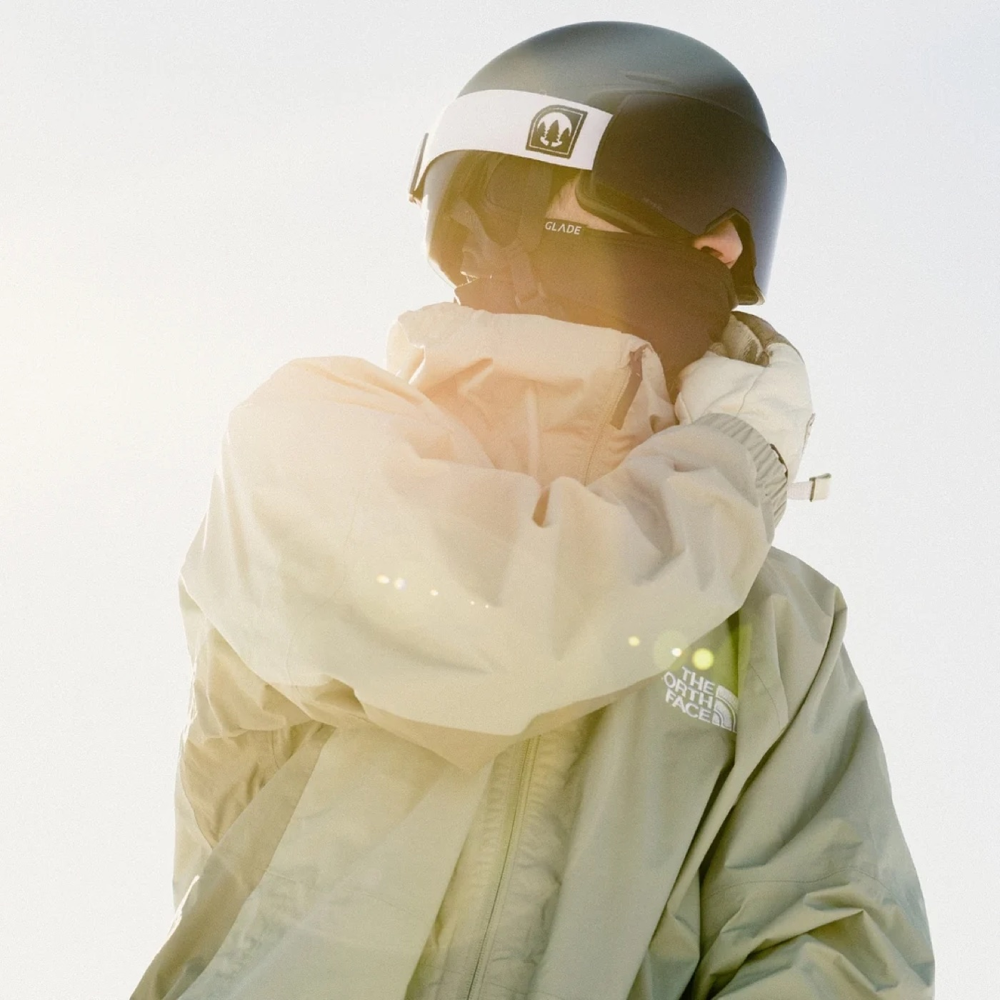
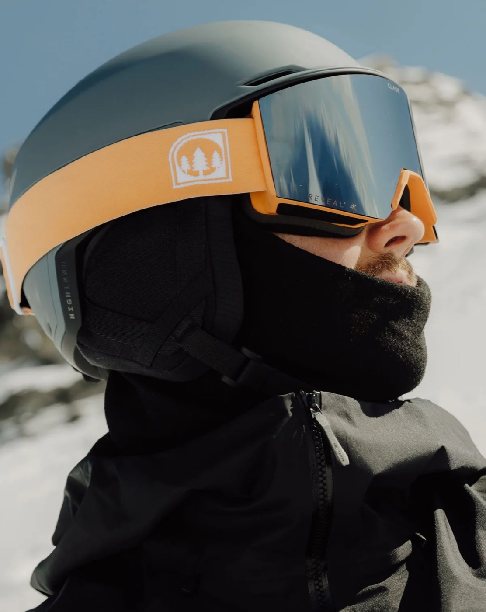
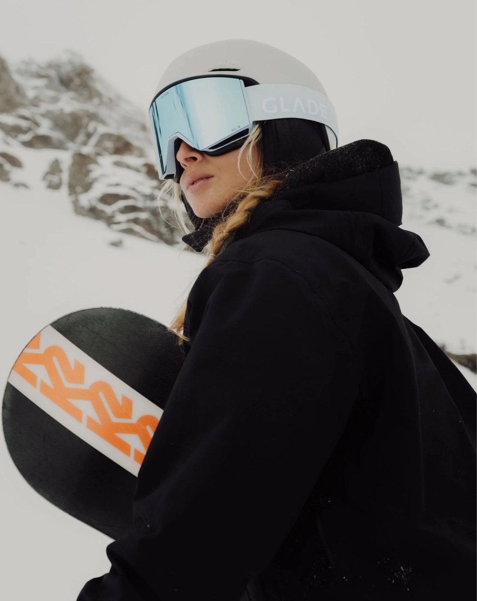

Ensures perfect alignment with the helmet vents to prevent fogging, and prevents vibration and shifting while skiing.

Next-generation optics that sharpen detail and boost contrast, giving you clearer vision in flat light conditions.
Engineered airflow channels and premium coatings that keep your lenses clear through heavy exertion and variable weather.

Scratch- and shatter-resistant lenses paired with flexible frames built to withstand the demands of mountain conditions.

Designed for seamless integration with ski helmets, featuring triple-layer face foam for all-day comfort and a secure fog-free fit.